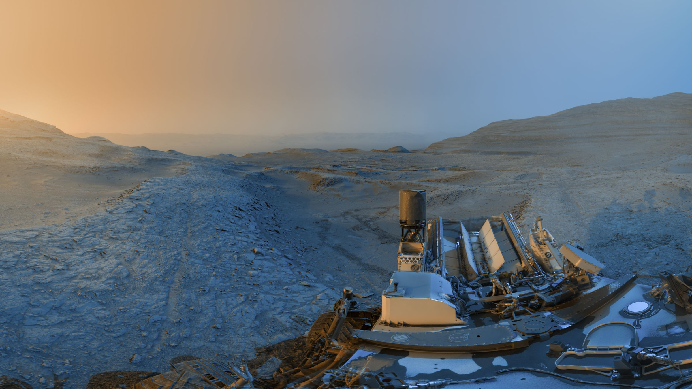

Elevation and slope
HiRISE stereo elevation model DTEEC_019698_1750_019988_1750_U01, 2 m per pixel, from Mars Reconnaissance Orbiter via USGS. We worked out slope and roughness from it.
02 : Field map
Every layer below is real orbital or rover data for a 4 by 6 km patch of Mount Sharp. Turn layers on and off, click two points to plan a walk, or pick one of Curiosity's stops to see what the ground actually looks like.
Eight places Curiosity parked during the 2025 boxwork campaign, with the rover's own photos from each one.

03 : Route planning
The planner works the way a rover's navigation software does. We cut the area into 20 m squares and give each one a cost from its slope and roughness. Squares that are too steep or too broken are walls. Then an A* search finds the cheapest path between the two points you pick.
The astronaut and the rover get different limits. A person in a suit can scramble up short slopes the rover would refuse, but tires much faster on a long climb. The rover is the other way round. So the two routes often split around a ridge and meet again on the other side.
25° steepest slope
2.0 m roughest ground
20° steepest slope
1.5 m roughest ground
04 : Mission budgets
A Marswalk runs on three budgets: time in the suit, energy in the body and the batteries, and radiation. These numbers follow whichever route is on the map right now.
Curiosity's RAD instrument logged over 10,000 readings while it worked here. This is the tissue-like detector, averaged per sol (a Mars day, about 24 hours 40 minutes). The dose is steady from day to day, which makes it easy to budget: time outside is what drives it.
05 : Rover load cases
Curiosity's aluminum wheels were punctured by sharp rocks on this mountain. So before a support rover follows a crew anywhere, we take the worst ground along the route and turn it into load cases for a finite element model of the wheel. Change the rover numbers and the table updates.
06 : Data and credits
HiRISE stereo elevation model DTEEC_019698_1750_019988_1750_U01, 2 m per pixel, from Mars Reconnaissance Orbiter via USGS. We worked out slope and roughness from it.
The matching HiRISE image at 1 m per pixel, lined up with the elevation model.
THEMIS on Mars Odyssey, 100 m per pixel. Rock holds heat after sunset, so warm areas at night are firm ground and cold areas are loose sand.
Curiosity's RAD instrument, sols 4489 to 4612, from NASA's Planetary Data System.
Curiosity's traverse and waypoints, and its raw Mastcam and Navcam images from sols 4530 to 4600.
Mount Sharp (PIA19912), boxwork postcard (PIA26680), Curiosity from orbit (PIA21710) and the Mojave self-portrait (PIA19142). NASA/JPL-Caltech/MSSS and University of Arizona. NASA images are public domain.